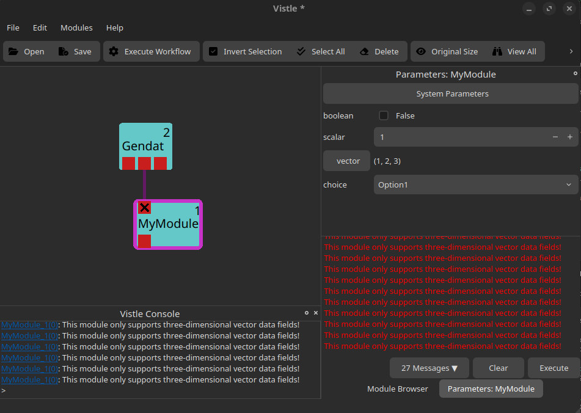
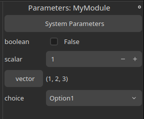
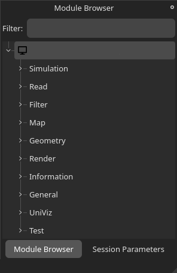

The Basics
Vistle is designed to be easily extensible through its modular structure. This tutorial will show you how to write your own Vistle module and how to incorporate it into the software, so you can use it right away.
Overview
The Module Class
The most common Vistle modules are the compute modules. They receive data from other modules through their input port(s), run computations on the data, and return the result(s) through their output port(s).
The following example shows the minimum code necessary to develop a Vistle module. It will create a module named MyModule.
#ifndef MYMODULE_H
#define MYMODULE_H
#include <vistle/module/module.h>
// this is a test module for the developer guide
class MyModule: public vistle::Module {
public:
MyModule(const std::string &name, int moduleID, mpi::communicator comm);
~MyModule();
private:
bool compute(const std::shared_ptr<vistle::BlockTask> &task) const override;
};
#endif // MYMODULE_H
To create a new Vistle module, create a class which inherits from the vistle::Module class. The name of that class should match the module’s name, so that is can be easily discovered. However, the name that is visible in the GUI later on, is determined by the CMakeLists.txt scripts(see below).
The input and output ports as well as the parameters of the module are defined in the class’s constructor. The computations done by the module are defined in the compute method. This method is called whenever the Vistle pipeline is executed or you double-click on the module.
The Main Function
It’s important to add the following line to the top of your module’s source file. It automatically creates the main function of the module integrating it into Vistle correctly.
MODULE_MAIN(MyModule)
Creating Input and Output Ports
Defining Ports
The input and output ports are created by calling the createInputPort and createOutputPort functions in the module’s constructor. Two strings, the name of the port (which can be used to reference it in the code later on) and a short description, must be passed to the function, as shown in the following example:
MyModule::MyModule(const std::string &name, int moduleID, mpi::communicator comm): Module(name, moduleID, comm)
{
// define the module's ports
createInputPort("data_in", "input grid with mapped data");
createOutputPort("data_out", "output grid with mapped data");
}
This code snippet adds an input and an output port to the module in the GUI:
Hovering over either port will show the port’s name and description.
Receiving Data through Input Ports
The following code snippet is an example of how to work with the data provided by the input port in the compute function.
bool MyModule::compute(const std::shared_ptr<vistle::BlockTask> &task) const
{
// check data provided by input port
auto input = task->expect<Vec<Scalar, 3>>("data_in");
if (!input) {
sendError("This module only supports three-dimensional vector data fields!");
return true;
}
auto container = splitContainerObject(input);
auto grid = container.geometry;
if (!grid) {
sendError("Found no grid at the input port!");
return true;
}
return true;
}
The code checks if the data field attached to the input grid is a three-dimensional vector and if the input grid is valid. If not, an error message is printed using the sendError method. The error message will be shown in the Vistle console as well as in the parameter window:

Adding Data to Output Ports
The following code snippet shows how to add a uniform grid and a scalar data field to the module’s output port:
bool MyModule::compute(const std::shared_ptr<vistle::BlockTask> &task) const
{
// create an output grid
size_t gridDim = 2;
UniformGrid::ptr outputGrid(new UniformGrid(gridDim, gridDim, gridDim));
for (unsigned i = 0; i < 3; i++) {
outputGrid->min()[i] = 0;
outputGrid->max()[i] = 1;
}
updateMeta(outputGrid);
// create a scalar data field which maps a value to each vertex of the grid
auto fieldSize = (gridDim + 1) * (gridDim + 1) * (gridDim + 1);
Vec<Scalar, 1>::ptr outputData(new Vec<Scalar, 1>(fieldSize));
for (unsigned i = 0; i < fieldSize; i++)
outputData->x()[i] = 0.5 * i;
outputData->setGrid(outputGrid);
outputData->setMapping(DataBase::Vertex);
outputData->addAttribute("_species", "outputData");
updateMeta(outputData);
// add mapped data to the output port
task->addObject("data_out", outputData);
return true;
}
The code creates a uniform grid of dimension 2x2x2 which spans from the point (0|0|0) to the point (1|1|1) as well as a scalar data field which provides one float value for each of the vertices in the grid.
updateMeta is called both for the grid and the data field and ensures that the metadata of the two objects is set up correctly for further use in Vistle.
The grid is attached to the data field with the setGrid method which allows us to add both data and grid to a single output port. The setMapping method is used to specify whether the data field is mapped to each vertex in the grid (DataBase::Vertex) or to each grid cell (DataBase::Element). The addAttribute method is used to give the data field a name which can be used by other modules. It is, e.g., displayed in the color map created by the Color module.
Finally, the data field, which now also includes the grid it is mapped onto, is added to the output port created and named in the constructor with addObject.
Creating Module Parameters
Defining Module Parameters
Module parameters can be defined by using the addIntParameter, addFloatParameter, addStringParameter, addVectorParameter, addIntVectorParameter or addStringVectorParameter functions in the module’s constructor. All of these functions expect a string with the parameter’s name, a string with the parameter’s description and a default value. Some functions expect additional parameters or have overloaded function definitions.
In the following example code, we show how to add the most commonly used module parameters to MyModule. Note that class members for each of the module’s parameters have been added to MyModule’s header file beforehand (see header file here).
DEFINE_ENUM_WITH_STRING_CONVERSIONS(Option, (Option0)(Option1)(Option2))
MyModule::MyModule(const std::string &name, int moduleID, mpi::communicator comm): Module(name, moduleID, comm)
{
// define the module's parameters
m_boolean = addIntParameter("boolean", "a boolean parameter", false, Parameter::Boolean);
m_scalar = addFloatParameter("scalar", "a float parameter", 1.0);
setParameterRange(m_scalar, 0.0, 10.0);
m_vector = addVectorParameter("vector", "a vector parameter", ParamVector(1.0, 2.0, 3.0));
m_choice = addIntParameter("choice", "choose one of the options", Option1, Parameter::Choice);
V_ENUM_SET_CHOICES(m_choice, Option);
}
This code snippet created the following parameters which can be modified in the GUI’s parameter window:

The first parameter is a boolean parameter with the default value false. Passing Parameter::Boolean to the addIntParameters function (as shown in the example), will create a checkbox that the user can toggle in the GUI.
The second parameter is a float value which the user can set in the parameter window. If desired, a minimum and maximum value can be defined for any arithmetic parameter using the setParameterRange method. The scalar parameter in this example only allows float values between 0 and 10.
The third parameter is a vector parameter which is created similarly to the scalar parameters. The user can define each component separately.
Finally, the fourth parameter is a choice parameter which creates a drop-down menu in the GUI which allows the user to set one of the available options. To create a choice parameter:
Pass
Parameter::Choiceto theaddIntParametersfunctionCreate an enum including all possible options using the
DEFINE_ENUM_WITH_STRING_CONVERSIONSmacro. Note that the names you define here will be displayed in the drop-down menu later on.Add the enum to the choice parameter with the
V_ENUM_SET_CHOICESfunction.
Working with Module Parameters
The Module class provides a changeParameter method which is called everytime a module parameter is changed. The value of a module parameter can be read with the getValue() function.
The following code snippet prints out which parameter has been changed to which value whenever one of MyModule’s four parameters is changed:
bool MyModule::changeParameter(const vistle::Parameter *param)
{
if (param == m_boolean) {
sendInfo("Changed parameter %s to %d", m_boolean->getName().c_str(), m_boolean->getValue());
} else if (param == m_scalar) {
sendInfo("Changed parameter %s to %f", m_scalar->getName().c_str(), m_scalar->getValue());
} else if (param == m_vector) {
auto vector = m_vector->getValue();
sendInfo("Changed parameter %s to (%f, %f, %f)", m_vector->getName().c_str(), vector[0], vector[1], vector[2]);
} else if (param == m_choice) {
sendInfo("Changed parameter %s to Option%d", m_choice->getName().c_str(), (Option)m_choice->getValue());
}
return true;
}
Sample Module Code
For your convenience, the complete header and source file for MyModule are provided here:
Click on the arrow on the left to view the complete MyModule header file.
module/develop/MyModule/MyModule.h:
#ifndef MYMODULE_H
#define MYMODULE_H
#include <vistle/module/module.h>
// this is a test module for the developer guide
class MyModule: public vistle::Module {
public:
MyModule(const std::string &name, int moduleID, mpi::communicator comm);
~MyModule();
private:
bool compute(const std::shared_ptr<vistle::BlockTask> &task) const override;
bool changeParameter(const vistle::Parameter *param) override;
vistle::IntParameter *m_boolean;
vistle::FloatParameter *m_scalar;
vistle::VectorParameter *m_vector;
vistle::IntParameter *m_choice;
};
#endif // MYMODULE_H
Click on the arrow on the left to view the complete MyModule source file.
module/develop/MyModule/MyModule.cpp
#include <vistle/alg/objalg.h>
#include <vistle/core/uniformgrid.h>
#include "MyModule.h"
MODULE_MAIN(MyModule)
using namespace vistle;
DEFINE_ENUM_WITH_STRING_CONVERSIONS(Option, (Option0)(Option1)(Option2))
MyModule::MyModule(const std::string &name, int moduleID, mpi::communicator comm): Module(name, moduleID, comm)
{
// define the module's ports
createInputPort("data_in", "input grid with mapped data");
createOutputPort("data_out", "output grid with mapped data");
// define the module's parameters
m_boolean = addIntParameter("boolean", "a boolean parameter", false, Parameter::Boolean);
m_scalar = addFloatParameter("scalar", "a float parameter", 1.0);
setParameterRange(m_scalar, 0.0, 10.0);
m_vector = addVectorParameter("vector", "a vector parameter", ParamVector(1.0, 2.0, 3.0));
m_choice = addIntParameter("choice", "choose one of the options", Option1, Parameter::Choice);
V_ENUM_SET_CHOICES(m_choice, Option);
}
MyModule::~MyModule()
{}
bool MyModule::compute(const std::shared_ptr<vistle::BlockTask> &task) const
{
// check data provided by input port
auto input = task->expect<Vec<Scalar, 3>>("data_in");
if (!input) {
sendError("This module only supports three-dimensional vector data fields!");
return true;
}
auto container = splitContainerObject(input);
auto grid = container.geometry;
if (!grid) {
sendError("Found no grid at the input port!");
return true;
}
// create an output grid
size_t gridDim = 2;
UniformGrid::ptr outputGrid(new UniformGrid(gridDim, gridDim, gridDim));
for (unsigned i = 0; i < 3; i++) {
outputGrid->min()[i] = 0;
outputGrid->max()[i] = 1;
}
updateMeta(outputGrid);
// create a scalar data field which maps a value to each vertex of the grid
auto fieldSize = (gridDim + 1) * (gridDim + 1) * (gridDim + 1);
Vec<Scalar, 1>::ptr outputData(new Vec<Scalar, 1>(fieldSize));
for (unsigned i = 0; i < fieldSize; i++)
outputData->x()[i] = 0.5 * i;
outputData->setGrid(outputGrid);
outputData->setMapping(DataBase::Vertex);
outputData->addAttribute("_species", "outputData");
updateMeta(outputData);
// add mapped data to the output port
task->addObject("data_out", outputData);
return true;
}
bool MyModule::changeParameter(const vistle::Parameter *param)
{
if (param == m_boolean) {
sendInfo("Changed parameter %s to %d", m_boolean->getName().c_str(), m_boolean->getValue());
} else if (param == m_scalar) {
sendInfo("Changed parameter %s to %f", m_scalar->getName().c_str(), m_scalar->getValue());
} else if (param == m_vector) {
auto vector = m_vector->getValue();
sendInfo("Changed parameter %s to (%f, %f, %f)", m_vector->getName().c_str(), vector[0], vector[1], vector[2]);
} else if (param == m_choice) {
sendInfo("Changed parameter %s to Option%d", m_choice->getName().c_str(), (Option)m_choice->getValue());
}
return true;
}
How to Add a Module to Vistle
The code for all Vistle modules can be found in the module folder in Vistle’s root directory. The module folder is divided into subdirectories which represent different stages of the visualization pipeline. Note that the names of these subfolders correspond to the categories shown in Vistle’s module browser:

Choose the category which fits your module best. The categories are explained in the Workflow article.
As it does not have any concrete functionality, MyModule will be placed into the Develop category. By convention, all code files for a module are placed inside a folder named after the module. So, for MyModule a folder called MyModule must be created inside module/develop and the source and header files we have created earlier must be moved inside.
To tell the system to compile our code, we have to create a CMakeLists.txt file which calls the add_module target. Pass the module’s name, a short description as well as all necessary header and source files to the add_module call. Note that the short description will be shown whenever you hover over the MyModule module in the Vistle GUI. The first argument is the name of the module as it will be known to Vistle.
By convention, the main source file is named accordingly.
module/develop/MyModule/CMakeLists.txt
add_module(MyModule "Test module" MyModule.h MyModule.cpp)
As a last step, add the subdirectory you just created to the category’s CMakeLists.txt file which is located in the parent directory of your module’s CMakeLists.txt file:
module/develop/CMakeLists.txt
# modules mainly suitable for testing and developing
set(VISTLE_MODULE_CATEGORY "Develop")
add_subdirectory(ClipVtkm)
# ...
add_subdirectory(MpiInfo)
add_subdirectory(MyModule) # add this line to include our test module in vistle
add_subdirectory(ObjectStatistics)
# ...
Now, when you compile Vistle, your module will be built. It will be added to the module browser on Vistle’s next invocation, allowing you to use it.
Document the Module
Also do not forget about adding documentation for your new module. You can start by copying module-doc-template.md as MyModule.md to your source code directory. Please refer to How to Write Documentation for more information.